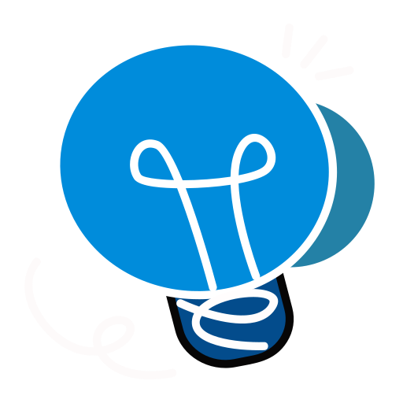

Project Name: Indus Marathon — Learning Sprint

Project Brief:
Blend micro-lessons with engaging challenges and nudges.

Conducting Need Analysis:
Completion data and pulse surveys identified drop-off moments.
- Topics needing spaced retrieval
- Motivation dips
- Checkpoint placement

Findings from the Needs Analysis:

My Expertise in Action:
- Challenge design
- Scoring & leaderboard logic
- Comms cadence

Learning Design Strategy:
Spaced practice, retrieval cues, and social proof to sustain momentum.

The Outcome
Higher weekly participation and improved quiz retention.
Click on the video below to check out a few glimpses from the project.